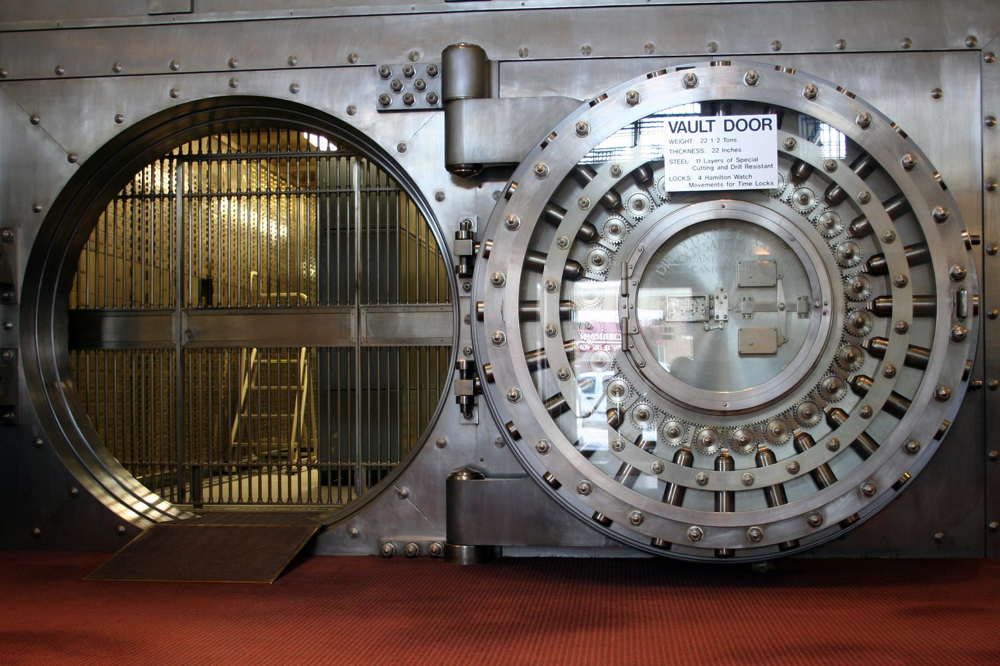

Wie viel Eigenkapital Sie in eine Immobilie stecken sollten, hängt vor allem davon ab, ob Sie selbst einziehen oder vermieten. Eigennutzer sollten möglichst viel Eigenkapital einbringen, weil sie die Kreditzinsen steuerlich nicht absetzen können. Kapitalanleger, die ein Portfolio aufbauen wollen, verteilen ihr Eigenkapital besser auf mehrere Objekte und behalten eine Reserve, statt es vollständig in eine Wohnung zu stecken.
Das Wichtigste in Kürze
- Mindestens die Kaufnebenkosten sollten aus Eigenkapital kommen, je nach Bundesland 7,5 bis 12 %, in Bayern rund 5,5 %.
- Eigennutzer sparen mit jedem Euro Eigenkapital den vollen Zins, Kapitalanleger nur den Zins nach Steuern.
- Wer ein Portfolio aufbaut, verteilt das Eigenkapital und finanziert 90 bis 95 % des Kaufpreises.
- Auch eine 100-Prozent-Finanzierung kann sinnvoll sein, wenn das Einkommen sie trägt.
Wofür kaufen Sie?
Wie viel Eigenkapital in eine Immobilie gehört, hängt vom Ziel ab. Ziel anklicken.
Ihr Ziel
50.000 € mehr Eigenkapital bei 4 % Zins
Zinsen nicht absetzbar
42 % Grenzsteuersatz
−840 €: Beim Kapitalanleger sinkt die Steuerersparnis aus den Zinsen.
Häuser zeigen das Prinzip, nicht maßstäblich · Grafik: Fischer & Geserich
Die Grundregel: Mindestens die Kaufnebenkosten
Unabhängig vom Ziel sollten die Kaufnebenkosten aus Eigenkapital kommen. Grunderwerbsteuer, Notar, Grundbuch und gegebenenfalls Maklerprovision machen je nach Bundesland 7,5 bis 12 Prozent des Kaufpreises, in Bayern rund 5,5 Prozent aus, in Berlin bei einer Wohnung mit Makler rund 11,6 Prozent. Werden sie mitfinanziert, steigt der Beleihungsauslauf über 100 Prozent und der Zins deutlich. Wie viel Eigenkapital Sie darüber hinaus einsetzen, ist eine strategische Entscheidung.
Eigennutzer: So viel wie sinnvoll möglich

Wer selbst einzieht, zahlt die Zinsen vollständig aus dem versteuerten Einkommen. Einen Steuerabzug gibt es dafür nicht. Jeder Euro Eigenkapital, der das Darlehen verringert, spart deshalb sicher Zinsen in voller Höhe. Bei 4 Prozent Zins entspricht das einer garantierten Rendite von 4 Prozent nach Steuern auf das eingesetzte Geld. Am Kapitalmarkt lässt sie sich ohne Risiko kaum erzielen.
Wie viel genau, hängt vom Zinsniveau ab. Liegen die Zinsen wie derzeit zwischen 3 und 5 Prozent, sollten Eigennutzer so viel Eigenkapital wie möglich einbringen und prüfen, ob sich ein Teil über Förderkredite wie die der KfW günstiger finanzieren lässt. Sind die Zinsen dagegen so niedrig wie 2021, als Geld leihen kaum etwas kostete, kann es sinnvoll sein, mehr zu finanzieren.
Dazu kommt, dass weniger Darlehen einen niedrigeren Beleihungsauslauf und damit oft einen besseren Zins für den gesamten Betrag bedeutet.
Eine Grenze setzt trotzdem die Reserve. Wer sein gesamtes Erspartes in die eigene Wohnung steckt und dann eine Heizung ersetzen muss, braucht dafür neues Geld. Ein teurer Verbraucherkredit muss das nicht sein. Je nach persönlicher Situation und Restschuld ist bei der finanzierenden Bank eine Nachbeleihung möglich: Das Darlehen wird aufgestockt, die Rate steigt. Erst wenn das nicht geht, bleibt der Verbraucherkredit. Beim Umstieg auf eine Wärmepumpe oder eine andere erneuerbare Heizung gibt es außerdem einen Zuschuss der KfW und einen ergänzenden Förderkredit. Den Zuschuss gibt es aber nur, wenn er beantragt wurde, bevor die Arbeiten beginnen, und jedes neue Darlehen setzt eine erneute Prüfung durch die Bank voraus. Mit einer Reserve hängt die Reparatur an keiner Kreditzusage.
Kapitalanleger: Es kommt auf das Ziel an
Bei vermieteten Immobilien sind die Darlehenszinsen Werbungskosten und mindern das zu versteuernde Einkommen. Ein Euro Zins kostet einen Anleger mit 42 Prozent Grenzsteuersatz nach Steuern also nur 58 Cent. Zusätzliches Eigenkapital spart deshalb weniger, als es auf den ersten Blick scheint.
| 50.000 € zusätzliches Eigenkapital, Zins 4 % | Eigennutzer | Kapitalanleger, 42 % Grenzsteuersatz |
|---|---|---|
| Ersparte Zinsen pro Jahr | 2.000 € | 2.000 € |
| Steuerwirkung | keine | 840 € weniger Steuerersparnis |
| Ersparnis nach Steuern | 2.000 € | 1.160 € |
Was daraus folgt, hängt vom Ziel ab.
Zwei oder drei Wohnungen für die Altersvorsorge. Auch hier kann eine 100-Prozent-Finanzierung sinnvoll sein. Die Bank finanziert den gesamten Kaufpreis, aus Eigenkapital kommen nur die Kaufnebenkosten. Die Zinsen mindern als Werbungskosten die Steuer, und das übrige Eigenkapital bleibt verfügbar. Ob das passt, entscheidet die Bonität. Wer 5.000 bis 7.000 Euro netto im Monat verdient, kann mit 100-Prozent-Finanzierungen starten. Bei 3.500 Euro netto raten wir davon ab. Wichtig bleibt, dass die Raten dauerhaft tragbar sind.
Ein Portfolio aufbauen. Wer mehrere Objekte erwerben will, sollte sein Eigenkapital nicht in einer einzigen Wohnung binden. Sinnvoller ist es, mit 90 oder 95 Prozent des Kaufpreises zu finanzieren und das Eigenkapital auf mehrere Käufe zu verteilen. Eine 110-Prozent-Finanzierung, also ganz ohne Eigenkapital, ergibt erst dann Sinn, wenn bereits Bestand vorhanden ist.
Rechenbeispiel: 100.000 Euro, eine Wohnung oder drei
Ein Anleger hat 100.000 Euro Eigenkapital. Die Kaufnebenkosten liegen in Berlin bei 11,57 Prozent, die Bank setzt den Beleihungswert mit 90 Prozent des Kaufpreises an. Gerechnet ist mit rund 5.260 Euro pro Quadratmeter, etwa dem Berliner Durchschnitt für Bestandswohnungen.
| Eine Wohnung für 300.000 €, 57 m² | Drei Wohnungen für je 200.000 €, je 38 m² | |
|---|---|---|
| Kaufnebenkosten | 34.710 € | 3 × 23.140 € = 69.420 € |
| Eigenkapital für den Kaufpreis | 65.290 € | 3 × 10.193 € = 30.580 € |
| Darlehen | 234.710 € | 3 × 189.807 € |
| Finanzierungsquote am Kaufpreis | 78 % | rund 95 % je Wohnung |
| Beleihungsauslauf | 86,9 % | 105,4 % je Wohnung |
Die erste Variante bekommt den besseren Zins und hat die ruhigere Finanzierung. Die zweite hat doppelt so viel vermietete Fläche und damit etwa doppelt so hohe Mieteinnahmen, verteilt das Risiko auf drei Mieter und drei Lagen und baut schneller Vermögen auf. Dafür zahlt sie einen höheren Zins und braucht ein Einkommen, das drei Finanzierungen trägt. Welche Variante richtig ist, entscheiden neben der Rendite vor allem das Ziel und die Bonität.
Die Finanzierungsreserve
Eigenkapital, das in der Immobilie steckt, ist nicht mehr verfügbar. Deshalb gehört zu jeder Planung eine Reserve, die Sie nicht einsetzen.
Sie deckt die Kosten, die nicht im Exposé stehen: eine Mieterhöhung, die sich verzögert, ein Mieterwechsel mit Leerstand und Renovierung, eine Sonderumlage der Eigentümergemeinschaft, eine defekte Therme, eine Nachzahlung bei der Steuer. Ohne Reserve finanzieren Sie solche Ereignisse über Dispo oder Ratenkredit. Genau das beschädigt die Bonität für den nächsten Kauf.
Als Orientierung hat sich bewährt, pro vermieteter Wohnung mindestens drei bis sechs Monatsraten des Darlehens als frei verfügbare Rücklage zu halten, zusätzlich zur Erhaltungsrücklage der Eigentümergemeinschaft. Bei älteren Objekten oder bei Mehrfamilienhäusern, wo Sie die Instandhaltung allein tragen, sollte sie entsprechend höher sein.
„Wir fragen unsere Kunden: Was können Sie sich als Eigenkapital vorstellen? Wenn jemand die Wohnung möchte, aber höchstens 20.000 Euro einsetzen will, sagen wir Stopp. Es funktioniert, aber wir würden es nicht empfehlen.“
Die Einschätzung von Fischer & Geserich
Unsere erste Frage an Kunden ist, was sie mit ihrem Eigenkapital erreichen wollen. Wie viel sie haben, kommt danach. Für die eigene Wohnung raten wir zu möglichst viel Eigenkapital. Für einen Anleger mit zwei oder drei Wohnungen als Altersvorsorge kann eine 100-Prozent-Finanzierung die bessere Wahl sein, wenn das Einkommen sie trägt. Wer ein Portfolio aufbauen will, sollte sein Eigenkapital verteilen und eine Reserve behalten. Den vollen Hebel ziehen wir erst, wenn Bestand da ist, der ihn trägt.
Häufige Fragen
Wie viel Eigenkapital sollte ich in eine Immobilie stecken?
Mindestens die Kaufnebenkosten, je nach Bundesland 7,5 bis 12 Prozent des Kaufpreises, in Bayern rund 5,5 Prozent. Darüber hinaus hängt es vom Ziel ab: Eigennutzer sollten bei Zinsen wie derzeit möglichst viel einbringen, weil sie Zinsen nicht absetzen können. Kapitalanleger, die mehrere Objekte kaufen wollen, verteilen ihr Eigenkapital besser und finanzieren 90 bis 95 Prozent des Kaufpreises.
Lohnt sich mehr Eigenkapital bei einer vermieteten Immobilie?
Weniger als bei einer selbst genutzten. Bei Vermietung sind die Zinsen Werbungskosten. Bei 42 Prozent Grenzsteuersatz spart ein Anleger mit 50.000 Euro zusätzlichem Eigenkapital bei 4 Prozent Zins nach Steuern 1.160 Euro im Jahr, ein Eigennutzer 2.000 Euro.
Wie hoch sollte die Finanzierungsreserve sein?
Als Orientierung mindestens drei bis sechs Monatsraten je vermieteter Wohnung als frei verfügbare Rücklage, zusätzlich zur Erhaltungsrücklage der Eigentümergemeinschaft. Bei älteren Gebäuden und Mehrfamilienhäusern mehr.
Quellen
Die Bilder ohne Fotonachweis wurden mit KI erstellt.
Der Beitrag dient der allgemeinen Information und ersetzt keine Rechts-, Steuer-, Finanzierungs- oder Anlageberatung. Zinssätze in Beispielrechnungen sind Beispielwerte, keine aktuellen Konditionen.